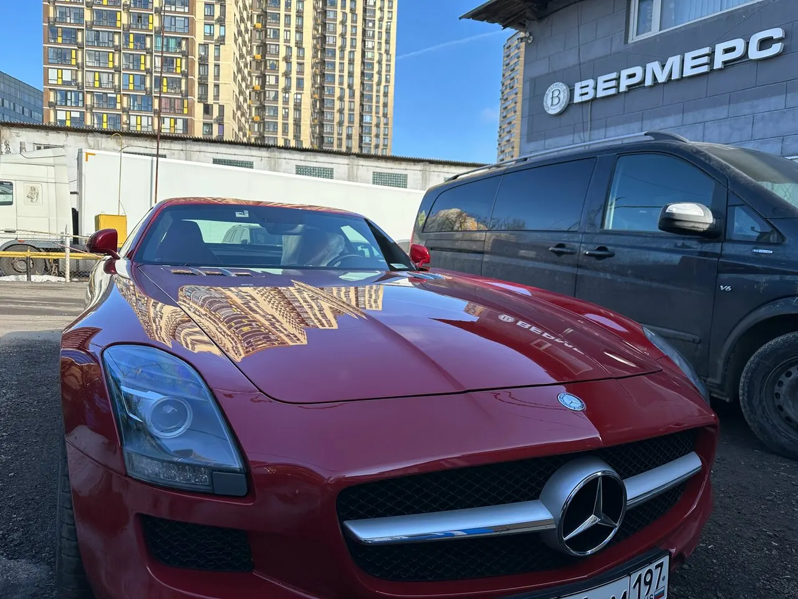
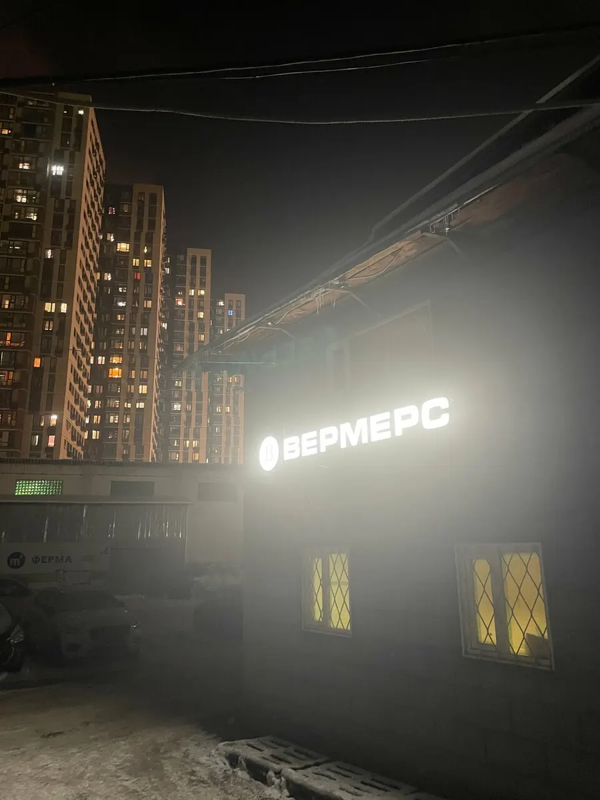
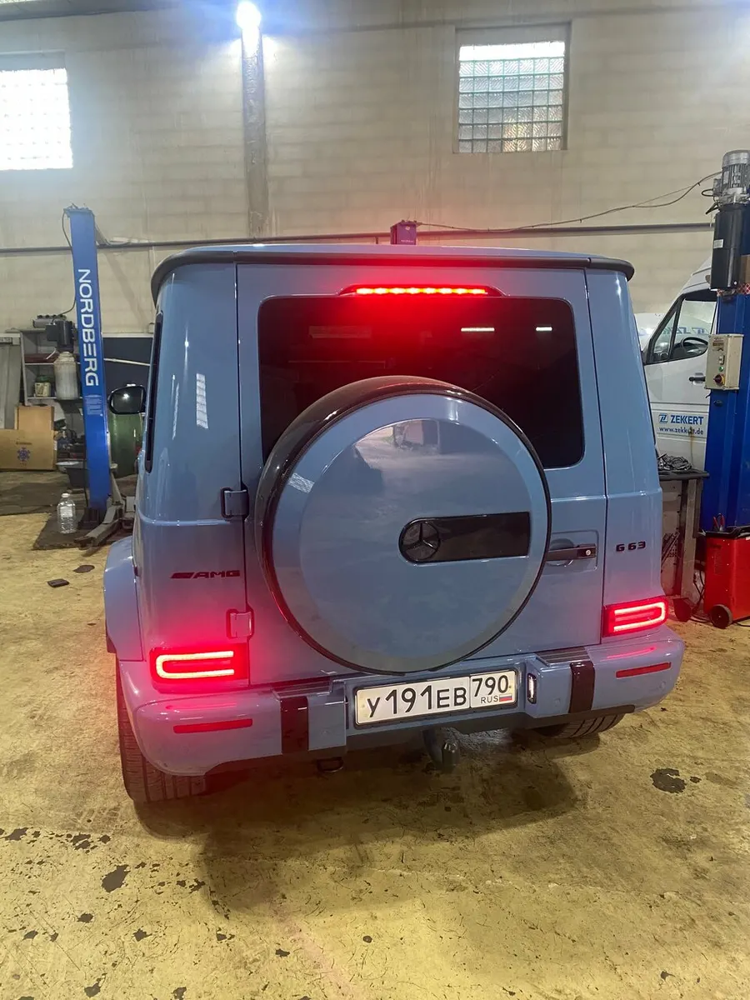
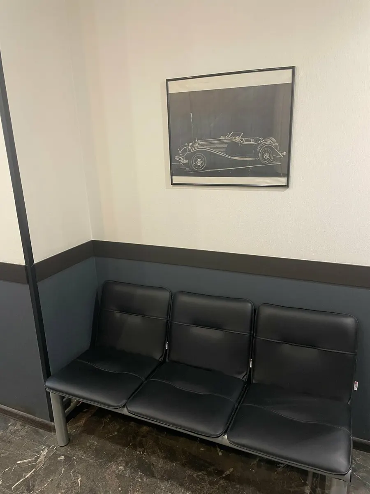

Mercedes-Benz и другие иномарки: ремонт, ТО, кузов
Автосервис Mercedes-Benz в Красногорске: ремонт, ТО и кузов
Запчасти подберут и закажут сами, лишнего не навяжут – так пишут клиенты на Картах. Выберите работу, день и время – заявка уйдёт мастерам в WhatsApp.
- Знак Яндекса «Хорошее место 2026»
- Ежедневно 9:00–20:00
- Нормочас – 2500 ₽

Что есть в сервисе
Входит
- Подбор запчастей: оригинал или аналог
- Кузовной цех и покраска
- Ремонт коммерческого транспорта и дизелей
- Клиентская комната: чай, кофе, телевизор
- Wi-Fi и парковка
Отдельно, если нужно
- Запчасти под заказ – с доставкой в сервис
- Оплата переводом и безналичная – для компаний
Цены
Цены с карточки сервиса на Яндекс.Картах. Стоимость остальных работ назовут при записи по марке и году машины.
Работа
- Нормочасстоимость часа работы мастера2 500 ₽
- Компьютерная диагностикауточнить
- Замена масла и ТОуточнить
- Ремонт тормозной системыуточнить
- Заправка и ремонт автокондиционерауточнить
Сложный ремонт и кузов
- Ремонт двигателя и АКППуточнить
- Ремонт автоэлектрикиуточнить
- Кузовной ремонт и покраскауточнить
- Ремонт пластиковых бамперовуточнить
- Жидкость AdBlue, оригинал3 300 ₽
Прайс на Картах давно не обновлялся – актуальную цену подтвердят при записи.
Как проходит визит
- 01
Записываетесь на время
Выбираете работу, день и время – сообщение уходит в WhatsApp сервиса.
- 02
Диагностика
Мастер ищет причину и объясняет, что нужно сделать.
- 03
Обсуждаете работы и запчасти
Варианты запчастей и стоимость обсуждают с вами до ремонта.
- 04
Забираете машину
Пока ждёте – клиентская комната с чаем и кофе.



За что хвалят в отзывах
Лишнего не навязывают
Клиенты пишут, что по-человечески советуют и не накручивают работы.
Действия обсуждают по телефону
Прежде чем делать, мастера звонят и дают свои рекомендации.
Знают Mercedes
Владельцы GL, S-класса и «старых немцев» обслуживаются здесь годами.
Берут и не мерседесы
Кузовной цех восстанавливал и другие марки – так пишут в отзывах.
Отзывы с Яндекс.Карт
«Внимательные специалисты и адекватные цены . Уже несколько лет обслуживаюсь в этом сервисе . Всегда по- человечески посоветуют и лишнего не навязывают .»
Ольга Хотинь · 2 сентября 2025
«Встречался только с отличными спецами. На приемке компактные и частные менеджеры. Очень по Мерседесовски! Продолжайте держать марку.»
Юрий Георгиевич · 13 июня 2026
«Прекрасное место для владельцев старых немцев. Мастера общительные и «рукастые». Любые действия обсуждают с вами по телефону. Дают свои рекомендация и скажу вам, что не жалею, что доверился им. К ним ещё ездил мой отец( году так в 2008) со своими машинами - он восхищён»
Сергей К. · 23 апреля 2022
Отзывы с карточки на Яндекс.Картах, без правок.
Частые вопросы
Работаете только с Mercedes-Benz?
Нет. На карточке указаны BMW, европейские, легковые и коммерческие автомобили, есть дизельный сервис.
Можно приехать без записи?
Иногда принимают и без записи, но с записью машину ждут к вашему времени.
Как добраться?
Красногорск, Центральная ул., 3А, стр. 2. В навигаторе набирайте «Вермерс» – по адресу он может привезти не туда.
Как можно оплатить?
Наличными, картой, переводом, безналично – для компаний. Возможна предоплата и постоплата.
Запишитесь в Вермерс на удобное время
- Адрес
- Центральная ул., 3А, стр. 2, Красногорск
- Часы
- Ежедневно 9:00–20:00
- Телефон
- +7 (903) 169-79-79